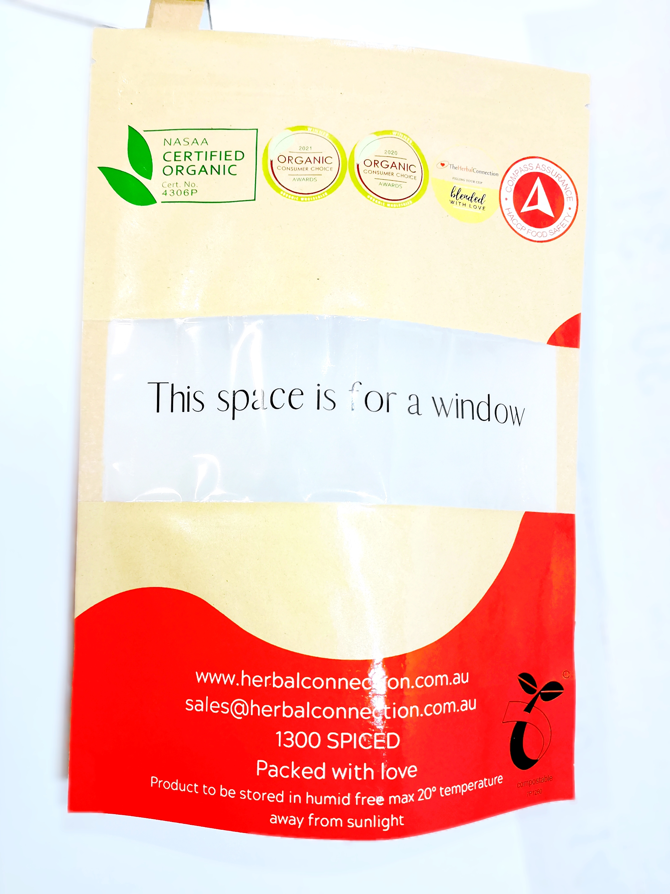

EU PPWR Regulation: Impacts on Food Companies' Flexible Packaging & Key Areas for Early Strategic Layout

The EU Packaging and Packaging Waste Regulation (PPWR, EU 2025/40) officially enters into force on 12 August 2026, replacing the old Packaging Directive. This binding regulation creates far-reaching changes for global food exporters, especially brands relying on flexible pouches for coffee, snacks, nuts and dry food.
Many food enterprises underestimate the cascading impacts of PPWR on packaging design, supply chain, cost and market access. Traditional multi-material composite flexible packaging, widely adopted for oxygen and moisture barrier, faces major restrictions in the coming years. Non-compliance may lead to cargo detention, fines and delisting from European retail channels.
1. Core Impacts of PPWR on Food Companies' Packaging
(1) Immediate chemical restriction: Strict PFAS control (Effective Aug 12, 2026)
Food-contact packaging must meet strict PFAS limits. Grease-resistant coatings containing PFAS are restricted.
There is no transition grace period for existing stock. Any non-compliant packaging cannot be placed on the EU market after the enforcement date. Heavy metal limits (Pb+Cd+Hg+Cr⁶⁺ ≤100mg/kg) also apply to all packaging materials, adhesives and printing inks.
(2) Recyclability grading rules phase out traditional multi-layer laminates
From January 2030, all packaging sold in the EU needs to reach at least Grade C recyclability (≥70%).
Common composite structures such as PET/AL/PE, PA/PE, multi-polymer mixed laminates are difficult to achieve qualified recyclability. Such complex layered bags will gradually be phased out. By 2038, only Grade A & Grade B recyclable packaging will be permitted.
(3) Mandatory post-consumer recycled (PCR) plastic content
Plastic food packaging must incorporate a fixed proportion of recycled materials, with targets rising year by year. Food-grade recycled resin supply will become a key bottleneck for many brands.
(4) Mandatory compliance documentation
Each packaging type requires a Declaration of Conformity (DoC) and complete technical files for inspection by EU authorities. Importers and brand owners will be required to submit all material composition reports, test certificates and recyclability assessment documents.
(5) Higher long-term packaging costs & supply chain reshuffle
Packaging redesign, material testing, certification and raw material upgrading push up overall costs. European retailers have begun requesting PPWR compliance documents from suppliers. Brands without compliant packaging solutions will lose supplier qualifications.
2. Key Areas Food Businesses Should Layout In Advance
✅ Area 1: Inventory & audit all existing packaging SKUs
- Map every flexible pouch specification for EU sales.
- Classify packaging into high-risk multi-material laminates and low-risk structures. Prioritize redesign for products using aluminum foil composite and PFAS anti-grease coatings.
✅ Area 2: Shift toward mono-material recyclable packaging solutions
- Replace difficult-to-recycle mixed composite films with mono-PE / mono-PP recyclable structures.
- Monomaterial packaging supports mechanical recycling while maintaining basic barrier performance for dry food, coffee and snacks. We provide gravure printing & digital printing services for recyclable mono-material pouches.
✅ Area 3: Complete material testing and certification preparation
- Arrange PFAS, heavy metal and food contact safety testing in advance.
- Cooperate with packaging manufacturers to collect raw material certificates, ink & adhesive data, to prepare complete technical dossiers and DoC documents.
✅ Area 4: Reserve stable supply of food-grade PCR materials
- Communicate with packaging suppliers to confirm the availability of food-safe recycled plastic raw materials, to meet future mandatory recycled content requirements.
✅ Area 5: Long-term product shelf-life verification for new packaging
- New recyclable structures have different barrier performance. Conduct shelf-life testing for your food products to avoid quality risks after switching packaging.
✅ Area 6: Clarify EPR registration obligations in target EU countries
- Different EU member states implement separate EPR schemes. Confirm registration deadlines and cost budgets for each market you enter.
Closing
PPWR is not merely a compliance challenge, but a catalyst for sustainable packaging upgrading. Food brands that start packaging redesign and supplier cooperation early will gain a competitive edge in the European market.
If you are exploring PPWR-compliant flexible packaging for coffee, snacks and dry food, contact us for mono-material packaging structure consultation, sample development and full compliance support.
Need PPWR-compliant packaging solutions?
Our team is ready to help you navigate the new regulation and develop compliant mono-material packaging.
📧 Email: may.lee@shenyingpacking.com
💬 WhatsApp: +86 13424643780